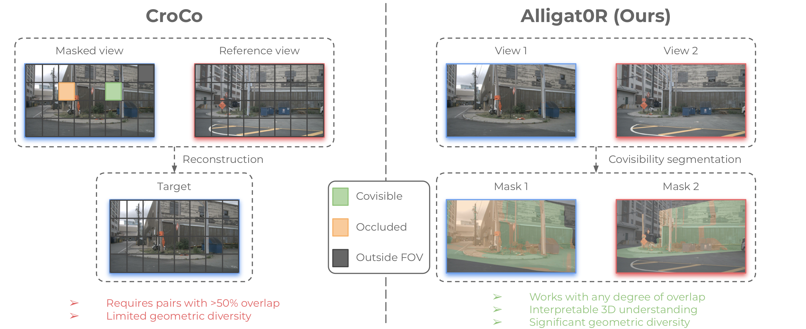
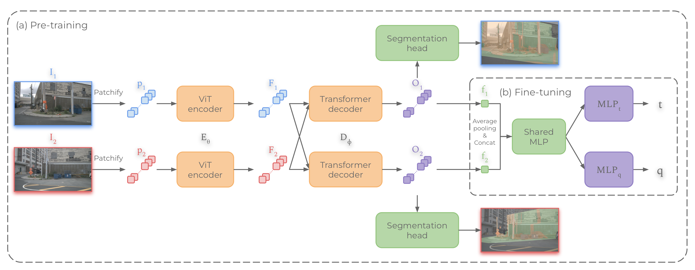
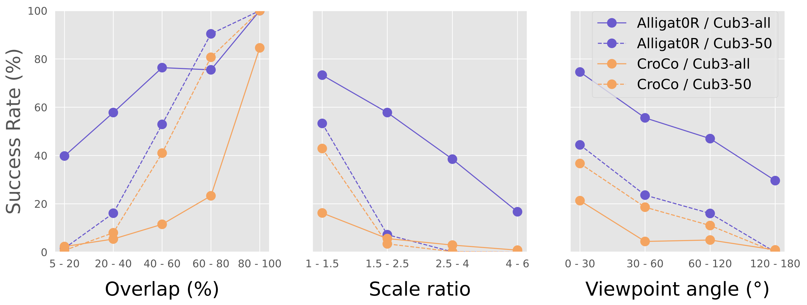
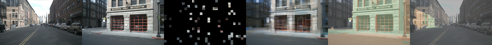
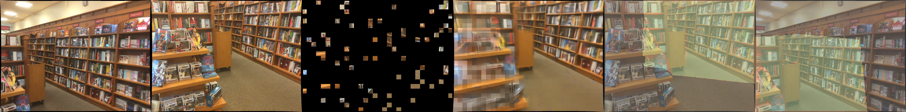

Abstract
Pre-training techniques have greatly advanced computer vision, with CroCo's cross-view completion approach yielding impressive results in tasks like 3D reconstruction and pose regression. However, cross-view completion is ill-posed in non-covisible regions, limiting its effectiveness. We introduce Alligat0R, a novel pre-training approach that replaces cross-view learning with a covisibility segmentation task. Our method predicts whether each pixel in one image is covisible in the second image, occluded, or outside the field of view, making the pre-training effective in both covisible and non-covisible regions, and provides interpretable predictions. To support this, we present Cub3, a large-scale dataset with 5M image pairs and dense covisibility annotations derived from the nuScenes and ScanNet datasets. The experiments show that Alligat0R significantly outperforms CroCo in relative pose regression.

Alligat0R vs. CroCo. CroCo attempts to reconstruct potentially non-covisible regions (an ill-posed task), resulting in blurred outputs. Alligat0R instead explicitly segments pixels as covisible, occluded, or outside FOV, overcoming this fundamental limitation.
At a Glance
Contributions
- Covisibility segmentation as pre-training. We introduce a novel pre-training objective that classifies each pixel as covisible, occluded, or outside FOV, replacing CroCo's cross-view completion. This makes pre-training effective in both covisible and non-covisible regions.
- Cub3 dataset. We create a large-scale dataset of 5M image pairs with dense covisibility annotations from nuScenes and ScanNet, available in two variants: Cub3-50 (high overlap) and Cub3-all (any overlap ≥ 5%).
- State-of-the-art pose regression. Alligat0R significantly outperforms CroCo on relative pose regression, achieving 60.3% success rate on RUBIK (vs. 38.6% for CroCo) and 92.5% on ScanNet1500 (vs. 87.4%).
- Interpretable geometric reasoning. The covisibility segmentation outputs provide direct insight into the model's understanding of scene geometry and cross-view relationships.
Method
Alligat0R uses the same encoder-decoder architecture as CroCo (ViT encoder + cross-attention decoder), but replaces the reconstruction objective with covisibility segmentation. During pre-training, both images are processed symmetrically (no masking), and the model learns to classify every pixel into three classes. For downstream pose regression, a regression head is added on top, and fine-tuning proceeds in two phases: first with a frozen backbone, then jointly with the segmentation head.

Architecture overview. (a) During pre-training, each pixel is classified as covisible, occluded, or outside FOV. (b) For fine-tuning on pose regression, features from both views are pooled, processed through a shared MLP, and fed to separate translation and rotation heads.
Main Results
We evaluate Alligat0R against CroCo pre-training on the RUBIK benchmark (autonomous driving) and ScanNet1500 (indoor), using the same architecture and fine-tuning protocol for fair comparison.
| Pre-training | Data | Backbone | RUBIK | ScanNet1500 | ||
|---|---|---|---|---|---|---|
| 5°/2m | 10°/5m | 10°/0.25m | 10°/1m | |||
| Frozen backbone | ||||||
| CroCo | Cub3-50 | Frozen | 21.8 | 48.1 | 48.3 | 69.3 |
| CroCo | Cub3-all | Frozen | 8.9 | 25.2 | 8.7 | 24.9 |
| Alligat0R | Cub3-50 | Frozen | 32.4 | 58.4 | 47.5 | 63.4 |
| Alligat0R | Cub3-all | Frozen | 55.3 | 82.3 | 78.2 | 92.5 |
| Unfrozen backbone | ||||||
| CroCo | Cub3-50 | Unfrozen | 38.3 | 66.7 | 75.7 | 91.5 |
| CroCo | Cub3-all | Unfrozen | 38.6 | 66.2 | 64.1 | 85.0 |
| Alligat0R | Cub3-50 | Unfrozen | 53.3 | 78.1 | 82.8 | 93.9 |
| Alligat0R | Cub3-all | Unfrozen | 60.3 | 81.9 | 85.5 | 95.1 |
| Baseline | ||||||
| From scratch | Cub3-all | Unfrozen | 29.1 | 52.3 | 37.0 | 57.2 |

Performance across geometric challenges. Success rate at 5°/2m on RUBIK, broken down by overlap, scale ratio, and viewpoint angle. Alligat0R trained on Cub3-all (red) consistently outperforms other configurations, especially in challenging low-overlap and extreme viewpoint scenarios.
Qualitative Results
Comparisons of CroCo's reconstructions and Alligat0R's covisibility segmentations on image pairs from nuScenes (outdoor) and ScanNet (indoor). While CroCo produces blurred results in non-covisible regions, Alligat0R correctly identifies the geometric relationships.


Each row shows: Reference image, Target image, Masked input for CroCo, CroCo reconstruction, and Alligat0R segmentation outputs for both views.
Citation
@article{loiseau2026alligat0r,
title={Alligat0r: Pre-training through covisibility segmentation
for relative camera pose regression},
author={Loiseau, Thibaut and Bourmaud, Guillaume and Lepetit, Vincent},
journal={Advances in Neural Information Processing Systems},
volume={38},
pages={13762--13789},
year={2026}
}
Acknowledgments
This project has received funding from the Bosch Research Foundation (Bosch Forschungsstiftung), the European Union (ERC Advanced Grant Explorer, Funding ID #101097259), and was granted access to the HPC resources of IDRIS under the allocation 2024-AD011014905R1 made by GENCI.